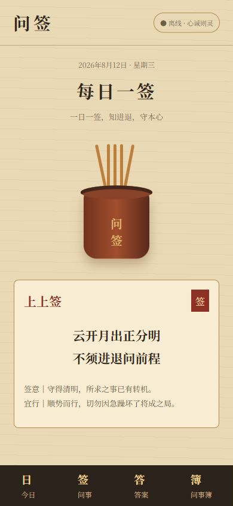
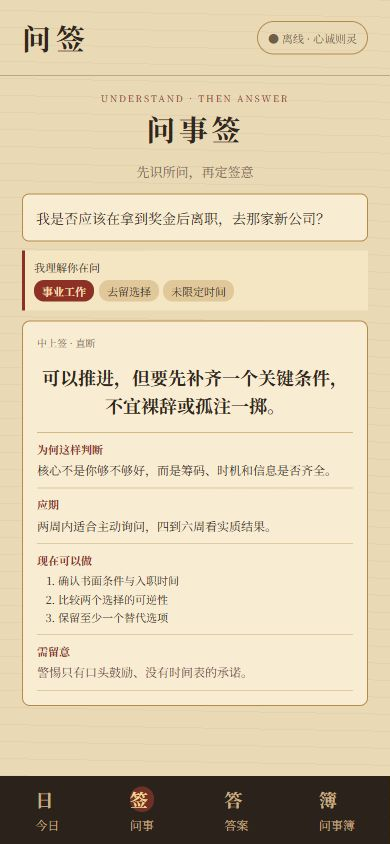
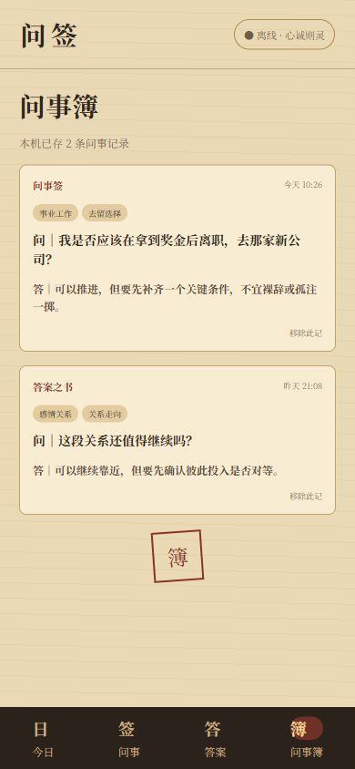

古意与现代，落在掌心
写下关于人生选择、工作、感情、财运或学习的问题。摇动手机，伴随震动、签筒动画与木签碰撞声，完成一次有仪式感的问签。
应用在本机理解问题的领域与意图，给出直断、签意、应期、行动建议与风险提醒。没有账号，没有云端，所有记录只属于你。
- 4
- 核心功能
- 0
- 网络依赖
- 100%
- 本机数据
东方问事 · 离线解签
把心中所问写下，轻摇手机，听木签落下。
在一支签里，寻找属于你的启示。
ABOUT WENQIAN
写下关于人生选择、工作、感情、财运或学习的问题。摇动手机，伴随震动、签筒动画与木签碰撞声，完成一次有仪式感的问签。
应用在本机理解问题的领域与意图，给出直断、签意、应期、行动建议与风险提醒。没有账号，没有云端，所有记录只属于你。



CORE FEATURES
针对人生选择、工作、感情、财运、学习等具体问题进行问签。
一事一问 · 相似不复抽理解问题所属领域和真实意图，生成直断、签意与应期等详细解析。
离线识别 · 针对解读过去的问题与第一次得到的结果都会保存在手机本地，随时回看。
本地保存 · 私密安心不仅给出倾向，还会提供下一步参考方向与需要留意的风险。
三步建议 · 明确可行不注册 · 不登录 · 不收费
不申请联网权限，不上传你的问题，不依赖任何远程服务。关掉网络，问签依然完整运行。
LATEST RELEASE
CHANGELOG